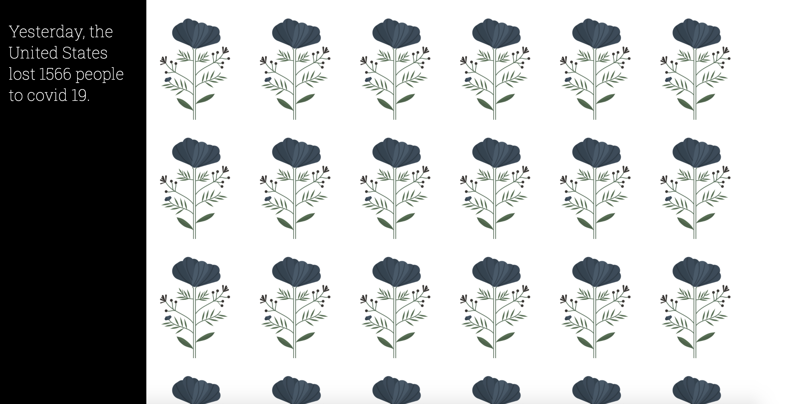

yesterday
2020
I came across the covid-19 API in late spring 2020. I wanted to create a visualization that had an impact that wasn't divorced from the sad fact that people all across the country were losing their lives, especially as rising apathy began to set in as "pandemic fatigue" set in.
I really struggled with how to go about doing this, a lot of the data visualizations I'd see in mainstream media felt very clinical. The human aspect was lost. Eventually I came to the idea of giving each person a flower. With the number of lives lost now above 500,000 (as of early March 2021) and realizing that trying to represent 500,000 + lives each with a flower may crash my browser window, I decided to "give" each person who passed the previous day a flower.
It's somewhat of an empty gesture. I don't know the names of these people, their families, who exactly they were. They become stripped down to a number, a set of data points that I can access through the endpoint of a public API. Though the gesture feels minimal, I hope it at least conveys that each number we see in a news report, each point on a graph, belongs to a person.
 A Screenshot of the site on March 2, 2021